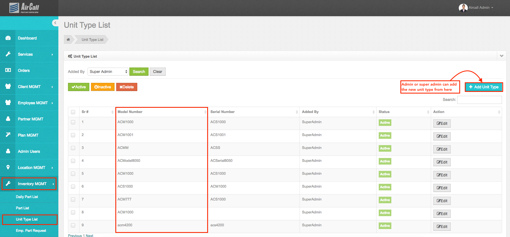
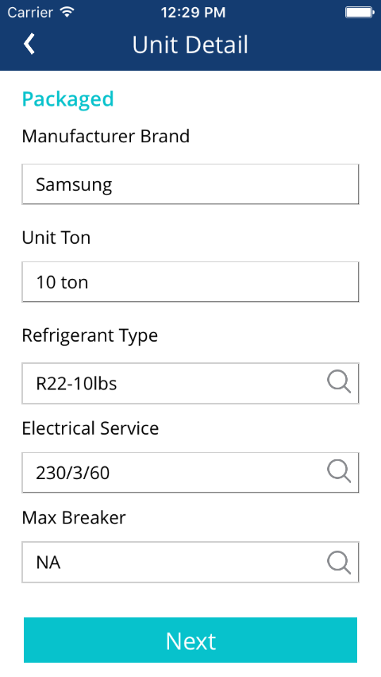
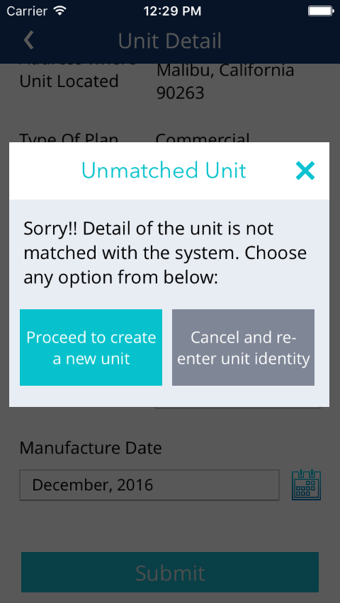

Unit Type List
• In this section units with the unique model number will be displayed here.
• Admin can active, inactive & delete unit type.
• Listing of unit type will show the Model #, Serial #, Added by, Status and edit option.
• Searching ability through the part type added by admin, super admin or employee.
• The part type which is added by the employee will be color coded differently.
•While adding the new part type, the admin will be asked to enter the units model #, serial # and other part information.
•When the employee will send the unit information, in order to find a match, the system will look into the unit type list. If match found, all the details of the unit will be returned to the employee application. And id not matched then the employee can create the another type.
•Match Or Unmatch of the unit will only perform based on the added model # of the unit.

o The fields marked (*) are compulsory.
Field |
Function |
Model Number (*): |
Model number of unit. |
Serial Number (*): |
Serial number of unit. |
Manufacture Date (*): |
Date on which unit was manufactured. |
Manufacture Brand (*): |
Manufacture Brand of unit. |
Unit Ton (*): |
Size of unit in Tons. |
Refrigerant (*): |
Different “Refrigerant” parts will be fetched & loaded here from the “Part List” section. Only parts with “Refrigerant” Part Type will be displayed in here. If none is selected from the given option, NA will be displayed for this field in the employee application when the unit type match will be found. |
Electrical Service (*): |
Electrical service of unit. |
Max Breaker (*): |
Different “Max Breaker” parts will be fetched & loaded here from the “Part List” section. Only parts with “Max Breaker” Part Type will be displayed in here. If none is selected from the given option, NA will be displayed for this field in the employee application when the unit type match will be found. |
Compressor (*): |
Different “Compressor” parts will be fetched & loaded here from the “Part List” section. Only parts with “Compressor” Part Type will be displayed in here. If none is selected from the given option, NA will be displayed for this field in the employee application when the unit type match will be found. |
Capacitor (*): |
Different “Capacitor” parts will be fetched & loaded here from the “Part List” section. Only parts with “Capacitor” Part Type will be displayed in here. If none is selected from the given option, NA will be displayed for this field in the employee application when the unit type match will be found. |
Contactor (*): |
Different “Contactor” parts will be fetched & loaded here from the “Part List” section. Only parts with “Contactor” Part Type will be displayed in here. If none is selected from the given option, NA will be displayed for this field in the employee application when the unit type match will be found. |
Filter dryer (*): |
Different “Filter dryer” parts will be fetched & loaded here from the “Part List” section. Only parts with “Filter dryer” Part Type will be displayed in here. If none is selected from the given option, NA will be displayed for this field in the employee application when the unit type match will be found. |
Defrost board (*): |
Different “Defrost board” parts will be fetched & loaded here from the “Part List” section. Only parts with “Defrost board” Part Type will be displayed in here. If none is selected from the given option, NA will be displayed for this field in the employee application when the unit type match will be found. |
Relay (*): |
Different “Relay” parts will be fetched & loaded here from the “Part List” section. Only parts with “Relay” Part Type will be displayed in here. If none is selected from the given option, NA will be displayed for this field in the employee application when the unit type match will be found. |
TXV Valve (*): |
Different “TXV Valve” parts will be fetched & loaded here from the “Part List” section. Only parts with “TXV Valve” Part Type will be displayed in here. If none is selected from the given option, NA will be displayed for this field in the employee application when the unit type match will be found. |
Reversing Valve (*): |
Different “Reversing Valve” parts will be fetched & loaded here from the “Part List” section. Only parts with “Reversing Valve” Part Type will be displayed in here. If none is selected from the given option, NA will be displayed for this field in the employee application when the unit type match will be found. |
Blower Motor (*): |
Different “Blower Motor” parts will be fetched & loaded here from the “Part List” section. Only parts with “Blower Motor” Part Type will be displayed in here. If none is selected from the given option, NA will be displayed for this field in the employee application when the unit type match will be found. |
Condensing fan motor (*): |
Different “Condensing fan motor” parts will be fetched & loaded here from the “Part List” section. Only parts with “Condensing fan motor” Part Type will be displayed in here. If none is selected from the given option, NA will be displayed for this field in the employee application when the unit type match will be found. |
Inducer draft motor/ flu vent motor (*): |
Different “Inducer draft motor/ flu vent motor” parts will be fetched & loaded here from the “Part List” section. Only parts with “Inducer draft motor/ flu vent motor” Part Type will be displayed in here. If none is selected from the given option, NA will be displayed for this field in the employee application when the unit type match will be found. |
Transformer (*): |
Different “Transformer” parts will be fetched & loaded here from the “Part List” section. Only parts with “Transformer” Part Type will be displayed in here. If none is selected from the given option, NA will be displayed for this field in the employee application when the unit type match will be found. |
Control board (*): |
Different “Control board” parts will be fetched & loaded here from the “Part List” section. Only parts with “Control board” Part Type will be displayed in here. If none is selected from the given option, NA will be displayed for this field in the employee application when the unit type match will be found. |
Limit switch (*): |
Different “Limit switch” parts will be fetched & loaded here from the “Part List” section. Only parts with “Limit switch” Part Type will be displayed in here. If none is selected from the given option, NA will be displayed for this field in the employee application when the unit type match will be found. |
Ignitor (*): |
Different “Ignitor” parts will be fetched & loaded here from the “Part List” section. Only parts with “Ignitor” Part Type will be displayed in here. If none is selected from the given option, NA will be displayed for this field in the employee application when the unit type match will be found. |
Gas valve (*): |
Different “Gas valve” parts will be fetched & loaded here from the “Part List” section. Only parts with “Gas valve” Part Type will be displayed in here. If none is selected from the given option, NA will be displayed for this field in the employee application when the unit type match will be found. |
Pressure switch (*): |
Different “Pressure switch” parts will be fetched & loaded here from the “Part List” section. Only parts with “Pressure switch” Part Type will be displayed in here. If none is selected from the given option, NA will be displayed for this field in the employee application when the unit type match will be found. |
Flame sensor (*): |
Different “Flame sensor” parts will be fetched & loaded here from the “Part List” section. Only parts with “Flame sensor” Part Type will be displayed in here. If none is selected from the given option, NA will be displayed for this field in the employee application when the unit type match will be found. |
Roll out sensor (*): |
Different “Roll out sensor” parts will be fetched & loaded here from the “Part List” section. Only parts with “Roll out sensor” Part Type will be displayed in here. If none is selected from the given option, NA will be displayed for this field in the employee application when the unit type match will be found. |
Door switch (*): |
Different “Door switch” parts will be fetched & loaded here from the “Part List” section. Only parts with “Door switch” Part Type will be displayed in here. If none is selected from the given option, NA will be displayed for this field in the employee application when the unit type match will be found. |
Ignition control board (*): |
Different “Ignition control board” parts will be fetched & loaded here from the “Part List” section. Only parts with “Ignition control board” Part Type will be displayed in here. If none is selected from the given option, NA will be displayed for this field in the employee application when the unit type match will be found. |
Coil Cleaner(*): |
Different “Coil Cleaner” parts will be fetched & loaded here from the “Part List” section. Only parts with “Coil Cleaner” Part Type will be displayed in here. If none is selected from the given option, NA will be displayed for this field in the employee application when the unit type match will be found. |
Misc(*): |
Different “Misc” parts will be fetched & loaded here from the “Part List” section. Only parts with “Misc” Part Type will be displayed in here. If none is selected from the given option, NA will be displayed for this field in the employee application when the unit type match will be found. |
Unit Manual |
Ability to add multiple unit manuals (pdf files) |
Status |
Active/Inactive |
• In employee application, if unit's model # is matched then details of the units part will be auto filled otherwise employee will be asked for adding the new unit type as displayed in the below screen shot.
If match found If match not found
 
Created with the Personal Edition of HelpNDoc: Single source CHM, PDF, DOC and HTML Help creation